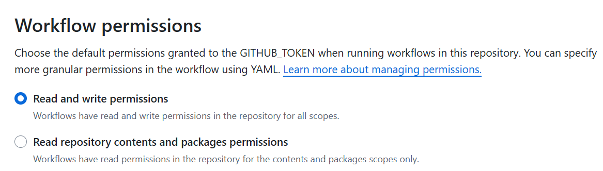

Mkdocs
セットアップ
リポジトリを初期化する
WSL Ubuntuでパッケージを入れる
mkdocs初期化
中身を出す
コミットして、GithubにパブリックでPush
ビルド/デプロイ
以下のコマンドで一括実施
- mdをビルドして./siteに保存
- ./siteをルートにgh-pagesブランチにコミット
.gitignore作成
Actions
書き込み権限を与える

https://squidfunk.github.io/mkdocs-material/publishing-your-site/
.github/workflows/mkdocs-build-deploy.yaml
name: mkdocs-build-deploy
on:
push:
branches:
- master
- main
permissions:
contents: write
jobs:
deploy:
runs-on: ubuntu-latest
steps:
- uses: actions/checkout@v4
- name: Configure Git Credentials
run: |
git config user.name github-actions[bot]
git config user.email 41898282+github-actions[bot]@users.noreply.github.com
- uses: actions/setup-python@v5
with:
python-version: 3.x
- run: echo "cache_id=$(date --utc '+%V')" >> $GITHUB_ENV
- uses: actions/cache@v4
with:
key: mkdocs-material-${{ env.cache_id }}
path: .cache
restore-keys: |
mkdocs-material-
- run: pip install mkdocs-material
- run: mkdocs gh-deploy --force